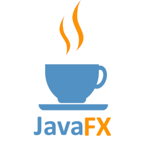
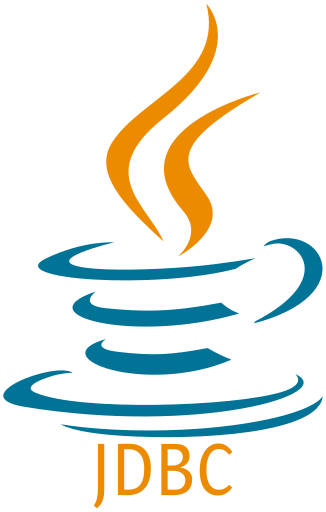
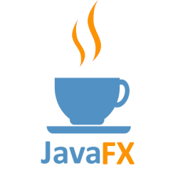
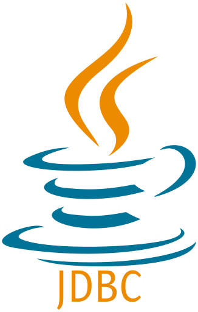
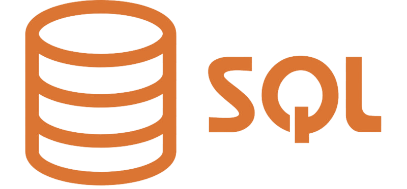
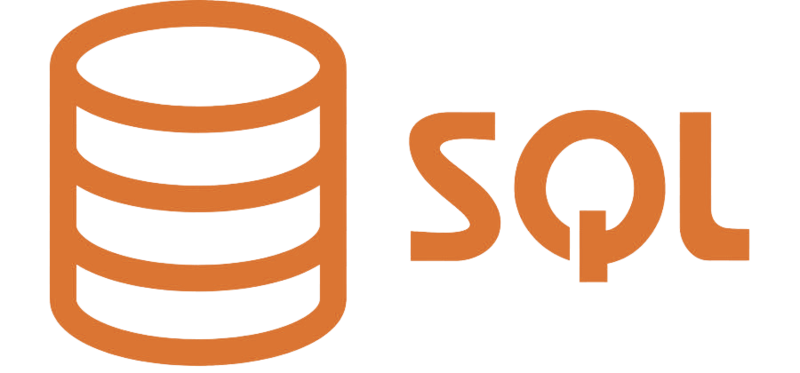

Blanchet Mathieu
Le projet Casse-Brique est un projet réalisé durant mon semestre 3 de BUT Informatique.
Son objectif premier, réaliser un jeux vidéo (en équipe de 5) ayant pour thème le rétrogaming !
 



 

Logique de jeu
Gestion de compte utilisateur
Gestion de score
Classement
Gestion d'interface graphique
L'un des objectifs de ce projet était l'application de la méthode agile SCRUM. C'est pourquoi, ce projet à été organisé en 5 sprint d'une durée variable de 2 à 4 semaines durant lesquelles nous devions réaliser les objectifs demandé par le client.